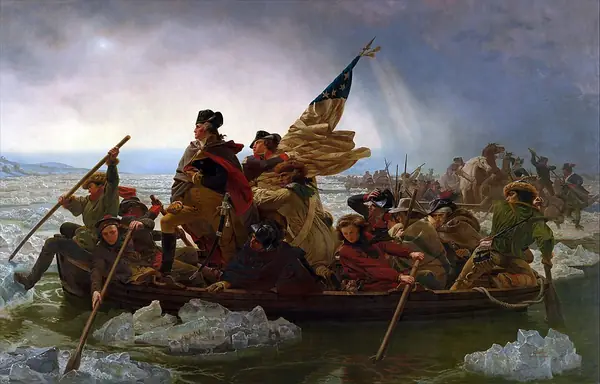
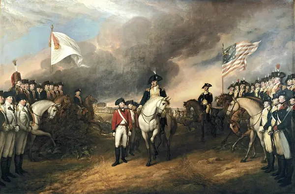

The Declaration of Independence and the promise it could not keep.
Reveal the meaning of each word, then say it back in your own words. (Which of these eight belong to the quarrel, and which to the ideas?)
Read each part. After it, answer the quick check from memory first, then reveal, then discuss.
Britain won the Seven Years’ War in 1763, but victory left it with enormous debts and a vast new territory to protect. Parliament’s answer was to raise taxes in the colonies: the Stamp Act in 1765, the Townshend duties a few years later, and the Tea Act of 1773. Each met escalating resistance under one slogan: no taxation without representation. The colonists sat in their own assemblies, but not in Parliament, which had the last word.
Resistance took many forms: petitions, boycotts, street protests and, in December 1773, the Boston Tea Party, in which colonists dumped chests of East India Company tea into the harbour. Britain tightened its grip, and by April 1775 the argument had become a fight. Shots were exchanged at Lexington and Concord, and the question was no longer how the colonies should be governed, but whether they should be part of Britain at all.
1. Why did Parliament raise taxes in the colonies after 1763?
2. What happened in April 1775?
1. Because the Seven Years’ War had left Britain with enormous debts and a vast new territory to defend.
2. Fighting began at Lexington and Concord.
On 4 July 1776 the Continental Congress adopted the Declaration of Independence. Its principal author was Thomas Jefferson, and its most famous sentence holds “these truths to be self-evident, that all men are created equal”, with rights to life, liberty and the pursuit of happiness. It was written to persuade the world, not just to list complaints, and it did something striking: it justified separation not by history or tradition, but by natural rights.
Yet Jefferson owned enslaved people throughout his life, and the document’s promise was far wider than its practice. His first draft contained a passage condemning the slave trade; Congress cut it out. For many scholars this contradiction is the central puzzle of the American founding: a nation conceived in the language of liberty, and built at the same time on the denial of it.
1. What did the Declaration of Independence justify separation by, and why was that striking?
2. What contradiction do scholars see in Jefferson?
1. Mainly by natural rights rather than by history or tradition.
2. He wrote that all men are created equal, yet he owned enslaved people all his life; a passage condemning the slave trade was cut from his first draft.

The war was long and, for the Americans, often desperate. After defeats around New York in 1776, Washington led his army across the Delaware River on a freezing night in December and surprised the enemy at Trenton, keeping the cause alive. The famous painting of that crossing, however, was made in 1851 by a German-American artist who was not there, and it contains details that were wrong: the flag it shows was not adopted until the following year.
The turning point came in 1777 at Saratoga, whose victory persuaded France to join the American side. In October 1781 the British general Cornwallis surrendered at Yorktown, besieged by American and French forces, and the Treaty of Paris of 1783 recognised the new nation. For many loyalists, Native nations and enslaved people, however, the peace brought nothing like freedom, and some had already fled to the British lines in the hope of finding it.
1. Why is the famous painting of the Delaware crossing a poor guide to what happened?
2. What brought France into the war, and what ended the fighting?
1. It was painted in 1851 by an artist who was not there, and includes wrong details, such as a flag that was not adopted until the following year.
2. Victory at Saratoga (1777) brought France in; Cornwallis’s surrender at Yorktown (1781) effectively ended the fighting.
The Revolution is a story full of contradictions: words against actions, ideals against interests. English has a family of linking words for exactly this. Choosing the right one — and the right grammar after it — is what separates a list of facts from an argument.
Choose the linker that fits each sentence. Every word is used once.
1. the Stamp Act was repealed in 1766, Parliament insisted that it still had the right to tax the colonies.
2. widespread protest, Parliament passed the Tea Act in 1773.
3. Northern merchants grew rich on trade, southern planters relied on enslaved labour.
4. Washington lost many of the early battles. , his army survived to fight again.
1. Although
2. Despite
3. whereas
4. Nevertheless
Join each pair into one sentence using the word in brackets. Type your sentence, then check a model answer. Other correct answers are possible.
1. The Declaration promised equality. Its author owned enslaved people. (although)
2. The colonists had no seats in Parliament. They were expected to pay its taxes. (despite)
3. Some colonists wanted peace with Britain. Others wanted independence. (whereas)
1. Although the Declaration promised equality, its author owned enslaved people.
2. Despite having no seats in Parliament, the colonists were expected to pay its taxes.
3. Some colonists wanted peace with Britain, whereas others wanted independence.
Each sentence has one mistake in the linker or its grammar. Find it and rewrite the sentence correctly.
1. Despite the colonists were angry, they stayed loyal for years.
2. Although Britain won the war, but it lost America.
3. The army was weak. In spite the winter, it kept fighting.
1. Despite being angry, the colonists stayed loyal for years. (Or: Although the colonists were angry…) — despite needs a noun or -ing form, not a clause.
2. Although Britain won the war, it lost America. (Or: Britain won the war, but it lost America.) — one linker only.
3. The army was weak. In spite of the winter, it kept fighting. — the phrase is in spite of.
Hold on to this: clause after although and whereas; noun or -ing after despite; a comma after however and nevertheless.
1. From the lecture on the colonies: which two things happened in Virginia in 1619, and which tense would you use to describe what had happened before them?
2. Give three hedging expressions and use one to make a careful claim about the Revolution.
1. The first elected assembly met and the first enslaved Africans recorded in English Virginia arrived; the past perfect describes what happened earlier (the assembly met twelve years after the settlers had landed).
2. For example arguably, tends to, is widely regarded as, appears to, to some extent. E.g. The Tea Act is widely regarded as a trigger for the Boston Tea Party.
Pick two of these cards and speak about each for at least a minute.
Write three sentences that each set an ideal against a reality from the lecture, using three different linkers.
From memory, with nothing in front of you:
Think about it: Which linker did you find hardest to use correctly, and what could you do to make it automatic?
Images from Wikimedia Commons: Washington Crossing the Delaware by Emanuel Leutze, MMA-NYC, 1851 (Emanuel Leutze, Public domain); Official Presidential portrait of Thomas Jefferson (by Rembrandt Peale, 1800) (Rembrandt Peale, Public domain); Surrender of Lord Cornwallis (John Trumbull, Public domain).